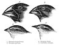

adaptation

Definition: In biology, adaptation has three related meanings. Firstly, it is the dynamic evolutionary process of natural selection that fits organisms to their environment, enhancing their evolutionary fitness. Secondly, it is a state reached by the population during that process. Thirdly, it is a phenotypic trait or adaptive trait, with a functional role in each individual organism, that is maintained and has evolved through natural selection.
Source: Wikipedia
Wikipedia Page
Wikidata Page